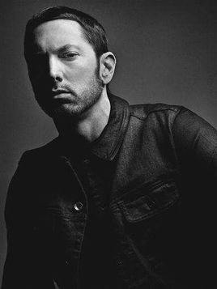

2000年2月，埃米纳姆凭借专辑《The Slim Shady LP》获得第42届格莱美最佳Rap歌手和最佳Rap专辑。
2002年，埃米纳姆出演了电影《8英里》，并在影片中演唱了《Lose Yourself》，获得奥斯卡最佳电影歌曲奖。
2004年2月，埃米纳姆凭借歌曲《Lose Yourself》获得第46届格莱美最佳Rap歌手和最佳Rap歌曲。
2008年10月，埃米纳姆的自传《这就是我》上市，而他的第六张专辑《Relapse》在年底发行。2011年12月，第53届格莱美奖的提名名单中，埃米纳姆以10项提名领跑，提名包括最佳专辑、最佳说唱专辑。2015年2月，埃米纳姆获得第57届格莱美最佳说唱专辑和最佳说唱表演奖。